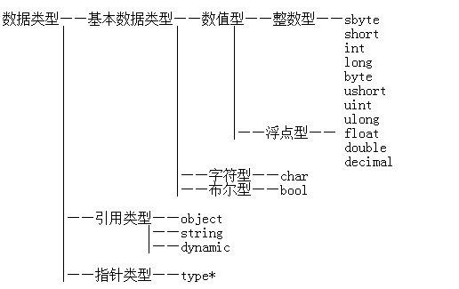

c#中的值类型和引用类型，==和equals，GetHashCode的区别和使用
1.值类型和引用类型
-
- 值类型 ：基本存储在栈中，也可能存在堆中。栈内存放的是具体的值(内容)。
- 引用类型：总是存在堆中，堆的内容的地址存放在栈中。
-
- 值类型 ：不能包含null。
- 引用类型：可以包含null。
-
- 值类型包括 ：
-
- 基本类型
- 结构体struct
- 枚举enum
- 引用类型包括：
-
- 类class
- 委托delegate
- 数组array
- 接口interface
- Object和string

2.==和equals的区别
- ==比较的是地址，是栈内的值；equals比较的是(对象的)内容，是堆内的值。
- 对值类型：值类型存储在栈内，故用==是直接判断其值是否相等。因为值类型不存在堆中的数据，因此值类型的equals也是判断数据。即，对值类型而言，==与equals相同，都是判断其值是否相等。
- 对引用类型：其中栈存储的是对象的地址，那么==就是比较两个地址是否相等，即是否指向同一个对象。equals函数则是比较两个对象在堆中的数据是否一样，即两个引用类型是否是对同一个对象的引用。
PS:String类型特殊
String类型虽然是引用类型，但是对String对象的赋值却按着值类型来操作。
例：
String s1 = "hello";
String s2 = "hello";
对s2初始化的时候，并没有重新开辟内存，而是直接将其地址指向s1的内容"hello"。这样一来，string类型虽然是引用类型，但是其==操作和equals操作都是一样的，均比较值是否相等。
3.GetHashCode
- 若两对象equals相等，那么其GetHashCode()必然相等。但是反过来，如果其GetHashCode()相等，那么这两个对象的equals方法比较结果不一定相同。（为了获得最佳性能，hash函数为对象内容生成的数字是随机的，这就意味着，内容不同的对象，有可能生成的数字是一样的，但可以认为这种概率非常小）
- GetHashCode函数是用来判断相等的。
- 对于值类型：相等就相等；对于引用类型：如果GetHashCode()不相同，则两个值一定不相同，如果GetHashCode()相同，则继续用equals判断两个值是否相同。